Recipes Checklist for Tales of Vesperia
- Author: @tauke
- Last updated: 12 July 2020
- Source: How to Unlock All Cooking Recipes
Quick Glance
This checklist are sorted by characters who can unlock new recipes after cooking certain recipes repeatedly.
For the likes/dislikes and benefit, please refer to the source.
The Wonder Chef list will can be found at the bottom of the guide.
Just in case, keep cooking repeatedly if you're feeling like it is not unlocking the recipe...
Characters
Yuri


Estelle
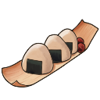


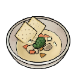
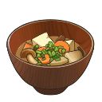
Repede

Karol


Rita

Raven
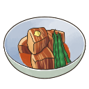
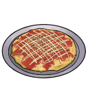


Judith


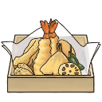
Patty
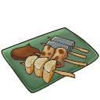
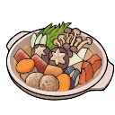
Flynn
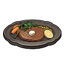

Events
The following recipes can be obtained from the Wonder Chef who disguises at various locations.
Wonder Chef


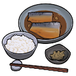
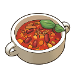


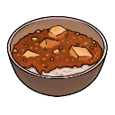
Other Recipes

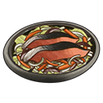